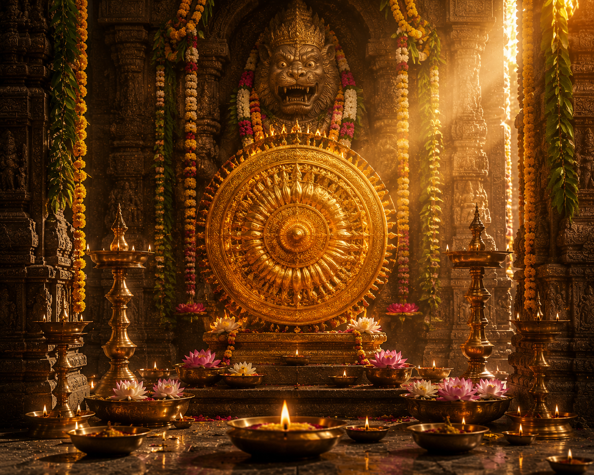

నరసింహ చతుర్దశి హిందూ ధర్మంలో అత్యంత పవిత్రమైన వైష్ణవ పర్వదినాలలో ఒకటి. వైశాఖ శుద్ధ చతుర్దశి రోజున శ్రీమహావిష్ణువు నాల్గవ అవతారమైన శ్రీ లక్ష్మీ నరసింహ స్వామివారి అవతారాన్ని స్మరించుకుంటూ ఈ పర్వదినాన్ని అత్యంత భక్తిశ్రద్ధలతో జరుపుకుంటారు.
ధర్మాన్ని స్థాపించడానికి, పరమభక్తుడైన ప్రహ్లాదుడిని రక్షించడానికి మరియు దుష్టుడైన హిరణ్యకశిపుని సంహరించడానికి శ్రీమహావిష్ణువు నరసింహ అవతారాన్ని ధరించిన రోజు ఇదే అని పురాణాలు తెలియజేస్తాయి. భారతదేశవ్యాప్తంగా ఉన్న నరసింహ క్షేత్రాలలో ప్రత్యేక పూజలు, అభిషేకాలు, హోమాలు మరియు ఉత్సవాలు నిర్వహించబడతాయి.
నరసింహ జయంతి
భారతీయ మరియు తెలుగు సంప్రదాయ పర్వదినం

౧. పరిచయం
౨. పండుగ ప్రాముఖ్యత
నరసింహ చతుర్దశి ధర్మం, భక్తి మరియు దైవరక్షణకు ప్రతీకగా నిలుస్తుంది.
పరమభక్తుడైన ప్రహ్లాదుని రక్షించడానికి భగవంతుడు ఎలాంటి రూపమైనా ధరించగలడని, భక్తుని పట్ల ఆయనకున్న అపారమైన ప్రేమను ఈ అవతారం తెలియజేస్తుంది.
ఈ రోజున శ్రీ లక్ష్మీ నరసింహ స్వామిని ఆరాధించడం వల్ల భయం, శత్రు బాధలు, దుష్టశక్తుల ప్రభావం తొలగి ధైర్యం, ఆరోగ్యం, ఐశ్వర్యం మరియు దైవానుగ్రహం లభిస్తాయని విశ్వాసం.
పరమభక్తుడైన ప్రహ్లాదుని రక్షించడానికి భగవంతుడు ఎలాంటి రూపమైనా ధరించగలడని, భక్తుని పట్ల ఆయనకున్న అపారమైన ప్రేమను ఈ అవతారం తెలియజేస్తుంది.
ఈ రోజున శ్రీ లక్ష్మీ నరసింహ స్వామిని ఆరాధించడం వల్ల భయం, శత్రు బాధలు, దుష్టశక్తుల ప్రభావం తొలగి ధైర్యం, ఆరోగ్యం, ఐశ్వర్యం మరియు దైవానుగ్రహం లభిస్తాయని విశ్వాసం.
౩. శ్రీ నరసింహ అవతారం – పురాణ నేపథ్యం
హిరణ్యాక్షుడు మరియు హిరణ్యకశిపుడు అనే రాక్షస సోదరులలో హిరణ్యాక్షుడిని శ్రీమహావిష్ణువు వరాహావతారంలో సంహరించాడు. తన సోదరుని మరణానికి ప్రతీకారం తీర్చుకోవాలని హిరణ్యకశిపుడు ఘోర తపస్సు చేసి బ్రహ్మదేవుని నుండి అనేక వరాలను పొందాడు.
ఆ వరాల కారణంగా తాను మరణించననే అహంకారంతో దేవతలను, ఋషులను మరియు ప్రజలను హింసించడం ప్రారంభించాడు. తన రాజ్యంలో శ్రీమహావిష్ణువు పేరును సైతం నిషేధించాడు.
అయితే అతని కుమారుడైన ప్రహ్లాదుడు చిన్నప్పటి నుంచే శ్రీహరి భక్తుడిగా ఉండేవాడు. హిరణ్యకశిపుడు ఎన్నో విధాలుగా ప్రహ్లాదుడిని బాధించినా, ప్రతి సందర్భంలోనూ శ్రీమహావిష్ణువు అతనిని రక్షించాడు.
ఒక రోజు కోపంతో హిరణ్యకశిపుడు "నీ విష్ణువు ఎక్కడ ఉన్నాడు?" అని అడిగి రాజమందిరంలోని ఒక స్తంభాన్ని చూపించాడు. ప్రహ్లాదుడు "భగవంతుడు సర్వవ్యాపి" అని సమాధానమిచ్చాడు.
ఆ మాట వినగానే హిరణ్యకశిపుడు ఆ స్తంభాన్ని గదతో కొట్టాడు. వెంటనే ఆ స్తంభం నుండి అర్థనరుడు–అర్థసింహం రూపంలో శ్రీ నరసింహ స్వామి ఆవిర్భవించాడు.
సాయంకాల సమయంలో, గడపపై, తన తొడలపై కూర్చోబెట్టి, ఆయుధం లేకుండా తన గోళ్లతో హిరణ్యకశిపుని సంహరించాడు. ఈ విధంగా బ్రహ్మదేవుడు ఇచ్చిన వరాలను భంగం కలగకుండా ధర్మాన్ని స్థాపించాడు.
ఆ తరువాత ప్రహ్లాదుని భక్తిని మెచ్చుకొని ఆయనకు దర్శనమిచ్చి ఆశీర్వదించాడు.
ఆ వరాల కారణంగా తాను మరణించననే అహంకారంతో దేవతలను, ఋషులను మరియు ప్రజలను హింసించడం ప్రారంభించాడు. తన రాజ్యంలో శ్రీమహావిష్ణువు పేరును సైతం నిషేధించాడు.
అయితే అతని కుమారుడైన ప్రహ్లాదుడు చిన్నప్పటి నుంచే శ్రీహరి భక్తుడిగా ఉండేవాడు. హిరణ్యకశిపుడు ఎన్నో విధాలుగా ప్రహ్లాదుడిని బాధించినా, ప్రతి సందర్భంలోనూ శ్రీమహావిష్ణువు అతనిని రక్షించాడు.
ఒక రోజు కోపంతో హిరణ్యకశిపుడు "నీ విష్ణువు ఎక్కడ ఉన్నాడు?" అని అడిగి రాజమందిరంలోని ఒక స్తంభాన్ని చూపించాడు. ప్రహ్లాదుడు "భగవంతుడు సర్వవ్యాపి" అని సమాధానమిచ్చాడు.
ఆ మాట వినగానే హిరణ్యకశిపుడు ఆ స్తంభాన్ని గదతో కొట్టాడు. వెంటనే ఆ స్తంభం నుండి అర్థనరుడు–అర్థసింహం రూపంలో శ్రీ నరసింహ స్వామి ఆవిర్భవించాడు.
సాయంకాల సమయంలో, గడపపై, తన తొడలపై కూర్చోబెట్టి, ఆయుధం లేకుండా తన గోళ్లతో హిరణ్యకశిపుని సంహరించాడు. ఈ విధంగా బ్రహ్మదేవుడు ఇచ్చిన వరాలను భంగం కలగకుండా ధర్మాన్ని స్థాపించాడు.
ఆ తరువాత ప్రహ్లాదుని భక్తిని మెచ్చుకొని ఆయనకు దర్శనమిచ్చి ఆశీర్వదించాడు.
౪. చరిత్ర
నరసింహ చతుర్దశిని అనాదికాలం నుండి భారతదేశవ్యాప్తంగా జరుపుకుంటున్నారు. భాగవత పురాణం, విష్ణు పురాణం, అగ్ని పురాణం మరియు ఇతర వైష్ణవ గ్రంథాలలో ఈ అవతారం గురించి విశదంగా వివరించబడింది.
తెలుగు రాష్ట్రాలలో అహోబిలం, యాదగిరిగుట్ట, సింహాచలం, వేదాద్రి, మంగళగిరి వంటి క్షేత్రాలలో ఈ పర్వదినాన్ని అత్యంత వైభవంగా నిర్వహిస్తారు.
తెలుగు రాష్ట్రాలలో అహోబిలం, యాదగిరిగుట్ట, సింహాచలం, వేదాద్రి, మంగళగిరి వంటి క్షేత్రాలలో ఈ పర్వదినాన్ని అత్యంత వైభవంగా నిర్వహిస్తారు.
౫. నరసింహ చతుర్దశి ఎలా జరుపుకుంటారు
ఈ రోజున భక్తులు పవిత్ర స్నానం చేసి ఉపవాసం ఆచరిస్తారు.
శ్రీ లక్ష్మీ నరసింహ స్వామివారికి పంచామృతాభిషేకం, సహస్రనామార్చన, ప్రత్యేక అలంకరణలు నిర్వహిస్తారు. నరసింహ కవచం, విష్ణు సహస్రనామం, భాగవత పారాయణం మరియు నరసింహ స్తోత్రాలను భక్తిశ్రద్ధలతో పారాయణం చేస్తారు.
సాయంత్రం అవతార సమయాన్ని స్మరించుకుంటూ ప్రత్యేక మహామంగళహారతి నిర్వహించడం అనేక క్షేత్రాలలో ఆనవాయితీ.
శ్రీ లక్ష్మీ నరసింహ స్వామివారికి పంచామృతాభిషేకం, సహస్రనామార్చన, ప్రత్యేక అలంకరణలు నిర్వహిస్తారు. నరసింహ కవచం, విష్ణు సహస్రనామం, భాగవత పారాయణం మరియు నరసింహ స్తోత్రాలను భక్తిశ్రద్ధలతో పారాయణం చేస్తారు.
సాయంత్రం అవతార సమయాన్ని స్మరించుకుంటూ ప్రత్యేక మహామంగళహారతి నిర్వహించడం అనేక క్షేత్రాలలో ఆనవాయితీ.
౬. నరసింహ చతుర్దశి రోజున నిర్వహించే ప్రధాన ఆచారాలు
పవిత్ర స్నానం
ఉపవాస దీక్ష
శ్రీ లక్ష్మీ నరసింహ స్వామి అభిషేకం
సహస్రనామార్చన
నరసింహ కవచ పారాయణం
విష్ణు సహస్రనామ పారాయణం
భాగవత పారాయణం
దానధర్మాలు
అన్నదానం
స్వామివారి దర్శనం
ఉపవాస దీక్ష
శ్రీ లక్ష్మీ నరసింహ స్వామి అభిషేకం
సహస్రనామార్చన
నరసింహ కవచ పారాయణం
విష్ణు సహస్రనామ పారాయణం
భాగవత పారాయణం
దానధర్మాలు
అన్నదానం
స్వామివారి దర్శనం
౭. ప్రధానంగా ఎక్కడ జరుపుకుంటారు
అహోబిలం శ్రీ లక్ష్మీ నరసింహ స్వామి దేవస్థానం
యాదగిరిగుట్ట శ్రీ లక్ష్మీ నరసింహ స్వామి దేవస్థానం
సింహాచలం శ్రీ వరాహ లక్ష్మీ నరసింహ స్వామి దేవస్థానం
మంగళగిరి శ్రీ లక్ష్మీ నరసింహ స్వామి దేవస్థానం
వేదాద్రి శ్రీ యోగానంద లక్ష్మీ నరసింహ స్వామి దేవస్థానం
ధర్మపురి శ్రీ లక్ష్మీ నరసింహ స్వామి దేవాలయం
భారతదేశంలోని అన్ని నరసింహ క్షేత్రాలు
యాదగిరిగుట్ట శ్రీ లక్ష్మీ నరసింహ స్వామి దేవస్థానం
సింహాచలం శ్రీ వరాహ లక్ష్మీ నరసింహ స్వామి దేవస్థానం
మంగళగిరి శ్రీ లక్ష్మీ నరసింహ స్వామి దేవస్థానం
వేదాద్రి శ్రీ యోగానంద లక్ష్మీ నరసింహ స్వామి దేవస్థానం
ధర్మపురి శ్రీ లక్ష్మీ నరసింహ స్వామి దేవాలయం
భారతదేశంలోని అన్ని నరసింహ క్షేత్రాలు
౮. ఆధ్యాత్మిక సందేశం
నరసింహ అవతారం మనకు ధర్మం ఎల్లప్పుడూ విజయం సాధిస్తుందని బోధిస్తుంది.
ప్రహ్లాదుని అచంచల భక్తి, విశ్వాసం, సహనం ప్రతి భక్తునికి ఆదర్శం. భగవంతునిపై సంపూర్ణ విశ్వాసంతో ఉండే వారిని ఆయన ఎప్పటికీ విడిచిపెట్టడని ఈ అవతారం స్పష్టంగా తెలియజేస్తుంది.
అహంకారం, అధర్మం ఎంత బలంగా కనిపించినా చివరికి ధర్మమే గెలుస్తుందనే నిత్యసత్యాన్ని నరసింహ అవతారం ప్రపంచానికి చాటి చెప్పింది.
ప్రహ్లాదుని అచంచల భక్తి, విశ్వాసం, సహనం ప్రతి భక్తునికి ఆదర్శం. భగవంతునిపై సంపూర్ణ విశ్వాసంతో ఉండే వారిని ఆయన ఎప్పటికీ విడిచిపెట్టడని ఈ అవతారం స్పష్టంగా తెలియజేస్తుంది.
అహంకారం, అధర్మం ఎంత బలంగా కనిపించినా చివరికి ధర్మమే గెలుస్తుందనే నిత్యసత్యాన్ని నరసింహ అవతారం ప్రపంచానికి చాటి చెప్పింది.
౯. ఆసక్తికర విషయాలు
శ్రీ నరసింహుడు శ్రీమహావిష్ణువు యొక్క నాల్గవ అవతారం.
ఈ అవతారం మనిషి మరియు సింహం రూపాల సమ్మేళనంగా ఉంటుంది.
హిరణ్యకశిపుని సంహారం బ్రహ్మదేవుడు ఇచ్చిన ప్రతి వరాన్ని భంగం కలగకుండా జరిగింది.
అహోబిలంలో నవ నరసింహ స్వామి ఆలయాలు ప్రసిద్ధి చెందాయి.
సింహాచలం దేవస్థానంలో స్వామివారు సంవత్సరంలో ఎక్కువ కాలం చందనంతో కప్పబడి ఉంటారు.
తెలుగు రాష్ట్రాలలో నరసింహ స్వామి క్షేత్రాలు అత్యంత ప్రాచీనమైన వైష్ణవ తీర్థక్షేత్రాలలో ఒకటిగా గుర్తించబడుతున్నాయి.
ఈ అవతారం మనిషి మరియు సింహం రూపాల సమ్మేళనంగా ఉంటుంది.
హిరణ్యకశిపుని సంహారం బ్రహ్మదేవుడు ఇచ్చిన ప్రతి వరాన్ని భంగం కలగకుండా జరిగింది.
అహోబిలంలో నవ నరసింహ స్వామి ఆలయాలు ప్రసిద్ధి చెందాయి.
సింహాచలం దేవస్థానంలో స్వామివారు సంవత్సరంలో ఎక్కువ కాలం చందనంతో కప్పబడి ఉంటారు.
తెలుగు రాష్ట్రాలలో నరసింహ స్వామి క్షేత్రాలు అత్యంత ప్రాచీనమైన వైష్ణవ తీర్థక్షేత్రాలలో ఒకటిగా గుర్తించబడుతున్నాయి.
౧౦. నరసింహ చతుర్దశి రోజున చేయవలసిన ముఖ్యమైనవి
పవిత్ర స్నానం చేయాలి.
ఉపవాసం ఆచరించాలి.
శ్రీ లక్ష్మీ నరసింహ స్వామిని దర్శించాలి.
నరసింహ కవచాన్ని పారాయణం చేయాలి.
విష్ణు సహస్రనామాన్ని చదవాలి.
భాగవత పురాణంలోని ప్రహ్లాద చరిత్రను చదవాలి.
అన్నదానం చేయాలి.
దానధర్మాలు చేయాలి.
పెద్దల ఆశీర్వాదం తీసుకోవాలి.
ఉపవాసం ఆచరించాలి.
శ్రీ లక్ష్మీ నరసింహ స్వామిని దర్శించాలి.
నరసింహ కవచాన్ని పారాయణం చేయాలి.
విష్ణు సహస్రనామాన్ని చదవాలి.
భాగవత పురాణంలోని ప్రహ్లాద చరిత్రను చదవాలి.
అన్నదానం చేయాలి.
దానధర్మాలు చేయాలి.
పెద్దల ఆశీర్వాదం తీసుకోవాలి.
౧౧. ఆధారాలు
గ్రంథ ఆధారాలు
శ్రీమద్భాగవత మహాపురాణం
విష్ణు పురాణం
అగ్ని పురాణం
బ్రహ్మాండ పురాణం
నరసింహ తాపనీయ ఉపనిషత్
ఇతర ఆధారాలు
ప్రముఖ నరసింహ క్షేత్రాల ప్రచురణలు
వైష్ణవ ఆగమ గ్రంథాలు
భారతీయ ధార్మిక సంప్రదాయ గ్రంథాలు
శ్రీమద్భాగవత మహాపురాణం
విష్ణు పురాణం
అగ్ని పురాణం
బ్రహ్మాండ పురాణం
నరసింహ తాపనీయ ఉపనిషత్
ఇతర ఆధారాలు
ప్రముఖ నరసింహ క్షేత్రాల ప్రచురణలు
వైష్ణవ ఆగమ గ్రంథాలు
భారతీయ ధార్మిక సంప్రదాయ గ్రంథాలు
౧౨. ముగింపు
నరసింహ చతుర్దశి కేవలం ఒక పర్వదినం మాత్రమే కాదు; అది భక్తి, ధర్మం మరియు దైవరక్షణకు శాశ్వత చిహ్నంగా నిలిచిన మహత్తర పర్వదినం.
ప్రహ్లాదుని అచంచల భక్తి, శ్రీ నరసింహ స్వామివారి దివ్య అవతారం మరియు అధర్మంపై ధర్మం సాధించిన విజయం ప్రతి యుగానికీ స్ఫూర్తిగా నిలుస్తాయి.
"భక్తుని రక్షణ కోసం ఏ రూపంలోనైనా అవతరించే కరుణామయుడు శ్రీ లక్ష్మీ నరసింహ స్వామివారు. ఆయన అనుగ్రహం ప్రతి కుటుంబంపై, ప్రతి భక్తునిపై నిత్యం ఉండాలని ప్రార్థిద్దాం."
ప్రహ్లాదుని అచంచల భక్తి, శ్రీ నరసింహ స్వామివారి దివ్య అవతారం మరియు అధర్మంపై ధర్మం సాధించిన విజయం ప్రతి యుగానికీ స్ఫూర్తిగా నిలుస్తాయి.
"భక్తుని రక్షణ కోసం ఏ రూపంలోనైనా అవతరించే కరుణామయుడు శ్రీ లక్ష్మీ నరసింహ స్వామివారు. ఆయన అనుగ్రహం ప్రతి కుటుంబంపై, ప్రతి భక్తునిపై నిత్యం ఉండాలని ప్రార్థిద్దాం."
✦ సర్వే జనాః సుఖినో భవంతు ✦